Pemangkasan Rambut Dasar
Panduan Lengkap Teknik dan Prosedur Pemangkasan Rambut Profesional
Pengertian & Tujuan Pemangkasan Rambut Dasar
Pengertian Pemangkasan Rambut Dasar
Pemangkasan rambut dasar adalah tindakan memotong rambut dengan teknik dan prosedur yang sistematis untuk menghasilkan bentuk pangkasan yang diinginkan. Proses ini melibatkan pemahaman tentang sudut pengangkatan, garis desain, dan proyeksi rambut untuk menciptakan struktur rambut yang rapi dan estetis.
Menurut para ahli, pemangkasan dasar merupakan fondasi utama bagi setiap penata rambut profesional sebelum mempelajari teknik pemangkasan tingkat lanjut atau artistik.
Tujuan Pemangkasan Rambut Dasar
- Mengurangi panjang rambut sesuai keinginan klien
- Merapikan ujung-ujung rambut yang rusak atau bercabang
- Membentuk dasar tatanan rambut yang proporsional
- Memudahkan penataan rambut sehari-hari
- Meningkatkan penampilan dan kepercayaan diri klien
- Mengoreksi kekurangan pada bentuk wajah melalui siluet rambut
Teknik Memegang Gunting
Teknik memegang gunting yang benar sangat krusial untuk menjaga akurasi pangkasan dan mencegah kelelahan atau cedera pada tangan penata rambut.

Gambar 2.18 Cara Memegang Gunting Saat Hendak Menggunting Rambut (Sari, 2023)

Gambar 2.19 Cara Memegang Gunting Setelah Selesai Menggunting Rambut (Sari, 2023)
Prosedur Memegang Gunting:
- Masukkan jari manis ke dalam lubang gunting bagian atas (statis).
- Masukkan ibu jari ke dalam lubang gunting bagian bawah (dinamis).
- Gunakan jari telunjuk dan jari tengah untuk menahan punggung gunting sebagai penyeimbang.
- Jari kelingking menggengam lubang bagian bawah jempol tadi.
- Pastikan hanya ibu jari yang bergerak saat memotong, sementara jari lainnya tetap diam untuk menjaga stabilitas.
Pemangkasan Rambut Oval
A. Definisi Pemangkasan Rambut Oval
Pemangkasan rambut oval merupakan teknik pemotongan rambut yang disesuaikan dengan bentuk wajah oval, yaitu wajah yang memiliki proporsi seimbang antara panjang dan lebar, dahi sedikit lebih lebar dibandingkan rahang, serta garis rahang yang membulat lembut.
Pemangkasan rambut pada bentuk wajah oval bertujuan untuk menonjolkan keindahan alami dan keharmonisan wajah tanpa perlu melakukan koreksi bentuk, karena wajah oval dianggap sebagai bentuk wajah ideal. Berbagai teknik seperti potongan rata, berlapis (layer), maupun graduasi dapat diterapkan dengan tetap memperhatikan tekstur rambut, arah tumbuh rambut, dan kebutuhan klien (Kemendikbud, 2022; Milady, 2023).
B. Garis Desain Pola Pangkasan Oval
Garis desain pola pemangkasan Oval merupakan garis tarikan berbentuk oval atau melengkuk kebawah yang mana merupakan patokan atau guide line untuk terjadinya hasil pemangkasan rambut Oval, setiap section demi section rambut yang diambil mulai dari bawah hingga atas membentuk garis oval atau melengkuk kebawah.
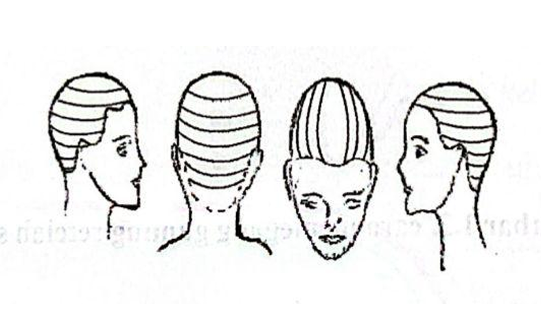
Gambar 2.20 Garis Desain Pola Pangkasan Oval (Salon Indonesia, 2023)
C. Pemangkasan Rambut Dasar dengan Pola Garis Diagonal ke Belakang (Oval)
Pemangkasan rambut ini menghasilkan pemangkasan pada bagian depan dan samping tampak lebih pendek dari bagian belakang, sehingga berbentuk ”U”.
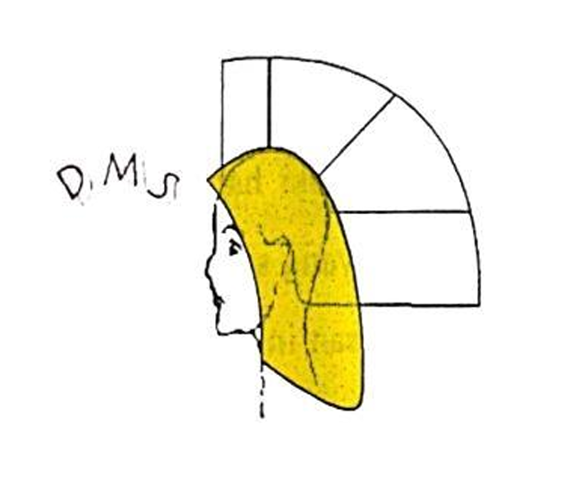
Gambar 2.21 Pola Garis Pangkas Oval (Efrianova, 2022)
Alat-alat Pemangkasan Rambut
Berikut adalah alat-alat utama yang digunakan dalam proses pemangkasan rambut dasar:

1. Sisir Pangkas Rambut
Berfungsi untuk membantu proses pengambilan rambut step by step. Berbahan plastik lentur, diameter ± 3-6 cm. Dominan berwarna biru atau putih.
Gambar 2.22 Sisir Pangkas (Katarina, 2023)

2. Gunting Pemangkasan Rambut
Alat mutlak berbahan stainless steel. Ukuran bervariasi (8cm, 11.5cm, 14.5cm). Sangat sensitif, jangan sampai terjatuh atau digunakan memotong kertas.
Gambar 2.23 Gunting Pangkas (Katarina, 2023)
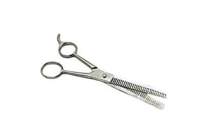
3. Gunting Penipis
Digunakan untuk mengurangi ketebalan rambut dan memberikan kesan alami/natural pada hasil pangkasan.
Gambar 2.24 Gunting Penipis Pangkas (Katarina, 2023)

4. Jepit Bebek
Berfungsi menjepit bagian rambut dan membantu menentukan desain pola pemangkasan.
Gambar 2.25 Jepit Bebek (Efrianova, 2022)

5. Kain atau Cap Pemangkasan
Melindungi pakaian dari sisa potongan rambut dan air. Berbahan katun atau parasut dengan berbagai variasi model.
Gambar 2.26 Cap/Kain Pangkas (Efrianova, 2022)

6. Botol Spryer
Berfungsi sebagai wadah air untuk membasahi rambut agar rapi dan mudah digunting. Berbahan plastik, diameter ± 10-20 cm.
Gambar 2.27 Botol Spryer (Efrianova, 2022)

7. Sikat/Brush Pembersih
Menghilangkan sisa rambut pada pundak, leher, dan pakaian. Memiliki gagang kayu dan bulu sikat yang bervariasi.
(Gambar Sikat Pembersih)
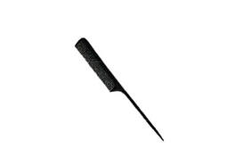
8. Sisir Ekor Tulang
Digunakan saat memblow atau memparting rambut pada saat pengeringan. Berbahan tulang hitam, ukuran ± 25 cm.
Gambar 2.28 Sisir Tulang Ekor (Sari, 2023)

9. Sisir Setengah Blow
Digunakan untuk menata rambut setelah digunting guna melihat hasil desain. Berbahan plastik lentur dengan handel fiber.
Gambar 2.29 Sisir Setengah Blow (Sari, 2023)

10. Sisir Blow Penuh
Berfungsi menata rambut dengan hasil maksimal. Sikat plastik elastis, bulu kaku, handel kayu. Tersedia ukuran S, M, L.
Gambar 2.30 Sisir Blow Penuh (Sari, 2023)

11. Hair Dryer
Mengeringkan dan membentuk rambut. Berbahan fiber/plastik dengan daya 80-2800 watt. Dilengkapi pengatur suhu.
Gambar 2.31 Hair Dyer (Efrianova, 2022)
E. Hal yang Perlu Diperhatikan (Persiapan)
Hal yang perlu dipersiapkan adalah segala sesuatu yang diperlukan dalam melakukan pemangkasan rambut baik ruang kerja, peralatan, bahan, persiapan klien dan persiapan diri pribadi (Widiarti, 2022).
1. Persiapan Area Kerja
Menyiapkan kondisi lingkungan kerja yang bersih dan terawat:
- Ruangan dan lantai dalam kondisi yang bersih.
- Peralatan yang akan digunakan dalam kondisi bersih.
- Meja harus dalam keadaan bersih dan tidak ada peralatan di atas meja.
- Segala peralatan dan kosmetika disusun dalam trolley.
2. Persiapan Pribadi
Persiapan hairstylist sebelum bertemu pelanggan:
- Memakai baju kerja dengan rapi dan bersih.
- Wajah dirias (make-up) agar memberikan kesan wajah yang fresh.
- Rambut harus ditata rapi dan tidak mengganggu saat bekerja.
- Tidak mengenakan perhiasan, jam tangan, dan sebagainya.
- Tampilkan ekspresi wajah yang ramah dan bertutur kata yang baik.
3. Persiapan Client atau Model
Memberikan kenyamanan dan keamanan bagi client:
- Mempersilahkan klien duduk dan menanyakan keinginannya.
- Melepaskan perhiasan client dan simpan di tempat yang aman.
- Melakukan wawancara (analisis/diagnosa).
- Lakukan proses pencucian rambut jika diperlukan.
- Gunakan cape penyampoan saat mencuci, lalu ganti ke cape pemangkasan.
F. Langkah Kerja Pemangkasan Rambut Oval
1. Menyisir Rambut
Menyisir rambut agar tidak kusut dan memudahkan dalam proses parting.
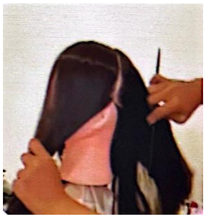
2. Menentukan Patokan Garis Tengah
Menentukan patokan garis tengah parting berdasarkan puncak hidung yang diambil secara vertikal.
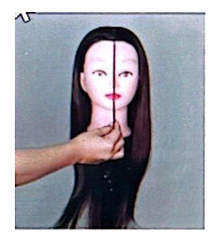
3. Parting Rambut
Membagi rambut menjadi 4 bagian: 2 bagian pada area depan dan 2 bagian pada area belakang.
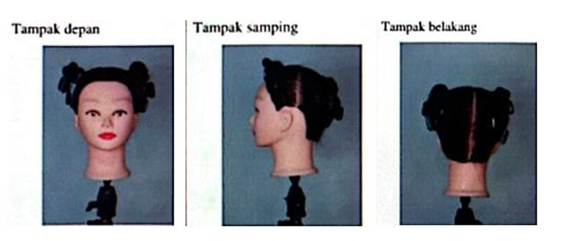
4. Menurunkan Section Pertama
Menurunkan section pertama menggunakan Seleksial Aksis setebal 1-2 cm, buat pola diagonal ke belakang (U).
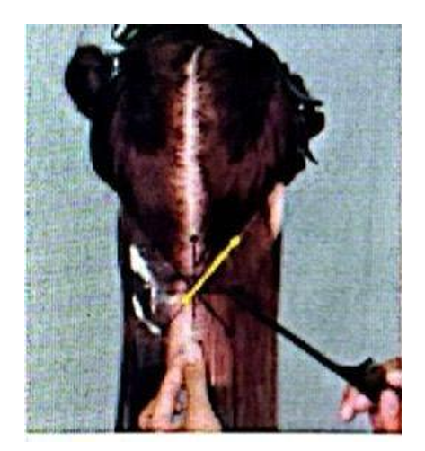
5. Memotong Rambut (0º)
Memotong rambut klien dengan 0º tanpa pengangkatan. Lakukan pengecekan sisi kiri dan kanan untuk menyamakan panjang.
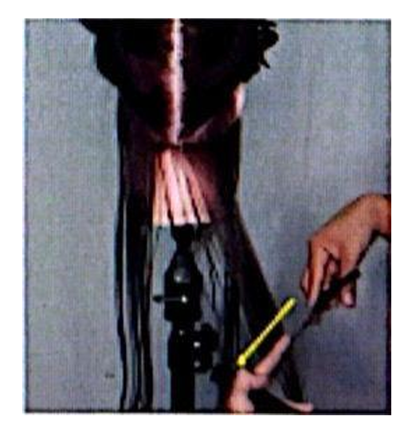
6. Menurunkan Section Kedua
Menurunkan section kedua dengan pola diagonal kebelakang (U). Pemangkasan mengarah ke dagu pada section teratas.
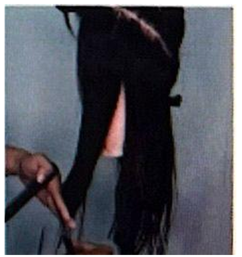
7. Menurunkan Section Ketiga
Menurunkan section ketiga menggunakan Seleksial Aksis dengan pola yang sama, kemudian lakukan pemangkasan.
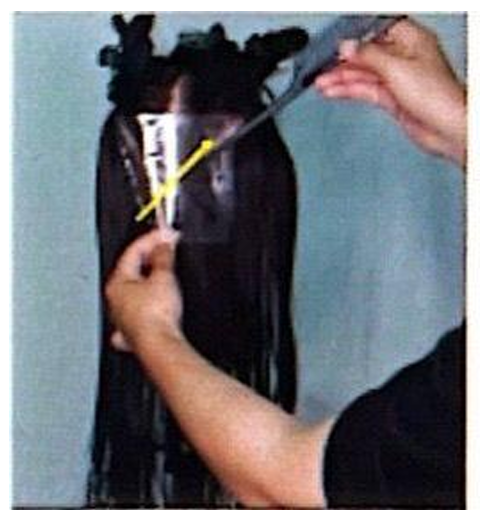
8. Menurunkan Section Keempat
Menurunkan section keempat dengan pola (U) yang sama. Setelah selesai, lakukan pengecekan akhir panjang rambut.
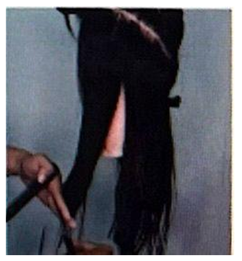
9. Membagi Rambut untuk Blow
Membagi rambut menjadi 3 bagian (2 depan, 1 belakang) sebelum melakukan proses pengeringan/blow.
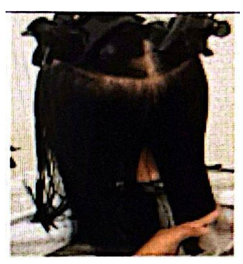
10. Melakukan Blow Rambut
Melakukan blow rambut dengan hair dryer secara maksimal agar menghasilkan tatanan yang indah.
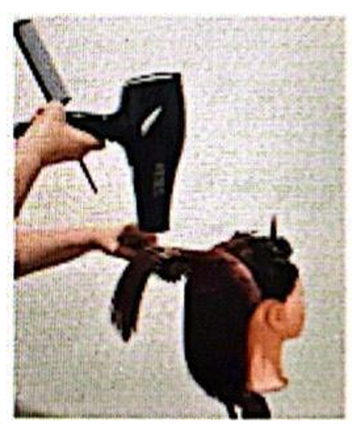
Terima Kasih
Materi Pemangkasan Rambut Dasar telah selesai dipelajari